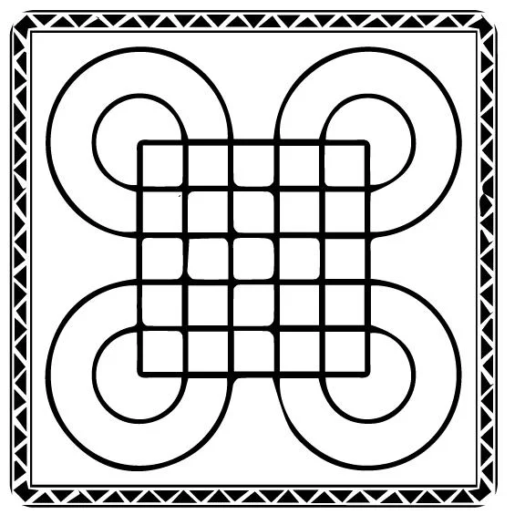
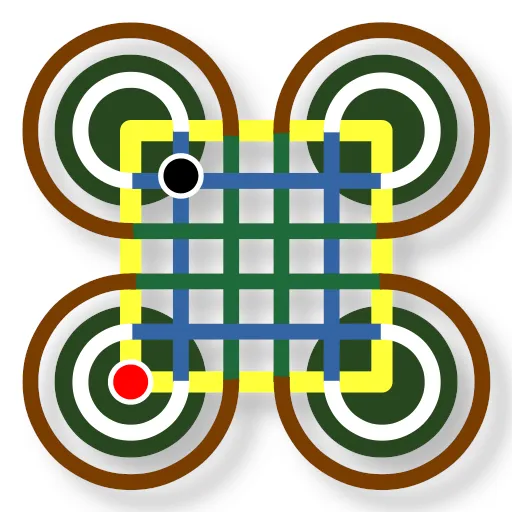

Surakarta is played on a 6x6 grid with eight looping circuits coming out of it: four outer loops and four inner loops. Pebbles are placed on the intersections of the grid as shown below:
Each player alternatively exercise their turns but choose between two types of moves, a simple or capturing move.
A player can always make a simple move, by placing any one of pebbles one step in any direction, into an empty intersection. Although moving diagonally is restricted in special variants of Surakarta, it is generally allowed in main-line matches. The special capturing move is allowed in special conditions: when you can loop through a circuit without jumping over your own pebbles, and land on an enemy pebble. You have to loop one or more times before capturing.
In some variants of Surakarta, stopping before actually capturing the opponent’s pebble is also accepted.
Pebbles occupying intersections of two lines having the same color are always more powerful. In the position above, there are no obstacles between the pebbles and the loops. This allows them to capture any piece in the same row or column. As strong as those pebbles are, cornered pebbles are just as useless. Once trapped, they cannot be used without sacrificing. Initially, both players have two pebbles placed on the corners (yellow-yellow intersections). In the end game, however, you shouldn’t keep any pebble in the corner. 
A draw is generally accepted when the same position is repeated three times, or no capture occurs after 50 moves, or when both players agree. But a draw can be prevented, if one player has more pebbles than the other. The black pebble controls the blue lines, and red cannot capture it without sacrificing a pebble first. So, red could place its pebble on a green-blue intersection, and get captured there. Since red controls the green lines, it will then be able to capture black in its new position.